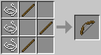

Modo sobrevivencia
O Modo Sobrevivência do Minecraft é uma das opções de jogo disponíveis no popular videogame de construção e exploração de mundo aberto. Neste modo, o jogador deve se esforçar para sobreviver em um ambiente hostil, onde os recursos são limitados e as ameaças são constantes.
Ao começar um novo jogo em Modo Sobrevivência, o jogador é colocado em um mundo gerado aleatoriamente com nada além das roupas do personagem e um inventário vazio. A partir daí, ele deve explorar o ambiente em busca de recursos para construir abrigo, equipamentos e ferramentas para se defender e prosperar.
A sobrevivência é o principal objetivo deste modo de jogo, e para isso é necessário monitorar os níveis de saúde, fome e sede do personagem. A fome é representada por um medidor que vai diminuindo com o tempo e pode ser recuperada comendo alimentos como frutas, carne e pão.
Além disso, o jogador deve estar sempre atento a ameaças como monstros noturnos, como zumbis, esqueletos e aranhas, que aparecem quando o sol se põe e desaparecem com o amanhecer. Para se proteger, é possível construir abrigos seguros, cercas, torres e outras estruturas defensivas. Também é possível criar armas e armaduras para enfrentar os inimigos com mais eficácia.
Minérios
A mineração é uma atividade importante no Modo Sobrevivência, já que é necessário coletar minérios e outros recursos para criar ferramentas, armas e equipamentos mais avançados. No entanto, as minas também podem ser perigosas, com a presença de monstros hostis e armadilhas mortais.
| Carvão | Ferro | Ouro | Redstone | Lapis-lazuli | Diamante | Esmeralda |
|---|---|---|---|---|---|---|
 |
 |
 |
 |
 |
 |
 |
Para a mineração, é necessário uma picareta. A primeira e menos eficeiente é a Picareta de de madeira, podendo ser construída na bancada de trabalho com dois gravetos e tres blocos de madeira.
ferramentas
No Minecraft, existem ferramentas, que são: A picareta, o machado, a pá e a enxada, cada uma exerce uma
função específica.
As ferramentas podem ser construídas com diferentes materiais, variando sua
eficiência, força e resistêcia. A base de construção será sempre a mesma, mantendo as posições dos gravetos,
alterando-se apenas os itens da parte superior.


Armas e defesas
As armas são uma parte importante do Minecraft, já que são utilizadas para proteção e sobrevivência contra monstros hostis e outros jogadores em modos de jogo multiplayer. Existem várias armas diferentes no Minecraft, cada uma com suas próprias vantagens e desvantagens.
|
A espada é a arma mais básica do Minecraft e pode ser criada com dois pedaços de madeira e uma barra de ferro, ou outros materiais como diamante ou ouro. Ela é útil para combate corpo a corpo e pode causar mais dano em certos tipos de monstros. As espadas também podem ser encantadas para aumentar seu poder de combate. |
|
|  |
O arco é outra arma popular no Minecraft e é útil para atacar monstros à distância. Ele é feito com pedaços de madeira e corda e pode ser encantado com várias opções, como Chama ou Poder, para causar mais dano e melhorar a precisão. |
|
A besta é outra arma à distância que pode ser utilizada no Minecraft. Ela é criada com madeira, ferro e corda, e dispara setas ou foguetes para causar dano aos inimigos. A besta pode ser carregada com vários tipos de projéteis, como flechas de fogo ou explosivas, para causar mais dano em determinadas situações. |
Além dessas armas, o Minecraft também possui ferramentas de combate únicas, como o Tridente, que é uma arma de arremesso que pode ser usada tanto em combate à distância quanto em combate corpo a corpo. Outra ferramenta de combate é a Pólvora, que é uma explosão em pó que pode ser usada para causar danos a grandes grupos de monstros.
Armaduras
As armaduras em Minecraft são equipamentos vitais para qualquer jogador que queira sobreviver às ameaças do mundo do jogo. Escolher a armadura certa dependerá do estilo de jogo de cada um, da fase em que se encontra e do nível de desafio que deseja enfrentar. E assim como as farrementas, as armaduras também podem ser construidas com diferentes materiais.
Dimensões
No Minecraft, existem três dimensões distintas: o Overworld, o Nether e o The End. Cada uma dessas dimensões tem suas próprias características e desafios.
O Overworld é a dimensão principal do jogo, onde os jogadores começam sua jornada. É uma dimensão vasta e cheia de vida, com paisagens variadas, como montanhas, florestas, oceanos e desertos. Também é onde a maioria dos recursos, como madeira, minérios e animais, pode ser encontrado.
 |
O Nether, por outro lado, é uma dimensão infernal, cheia de lava, fogo e monstros perigosos. É acessível através de portais construídos com obsidiana no Overworld. No Nether, os jogadores podem encontrar recursos exclusivos, como quartzo do Nether e blaze rods, que são usados para criar poções e outros itens úteis. |
 |
O End é uma dimensão misteriosa e perigosa, acessível através de portais construídos com olhos do Ender, que são encontrados em masmorras subterrâneas. O The End é habitado por uma criatura poderosa chamada Ender Dragon, que os jogadores devem derrotar para completar o jogo. A dimensão também contém uma variedade de recursos exclusivos, como pérolas do Ender e obsidiana do End. |
Cada dimensão oferece aos jogadores desafios e recompensas únicas, incentivando-os a explorar e progredir através do jogo.